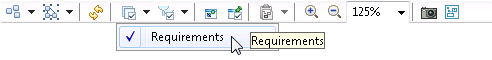
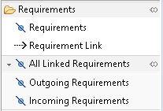
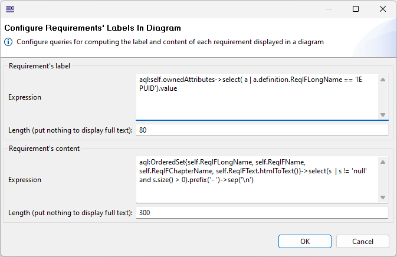
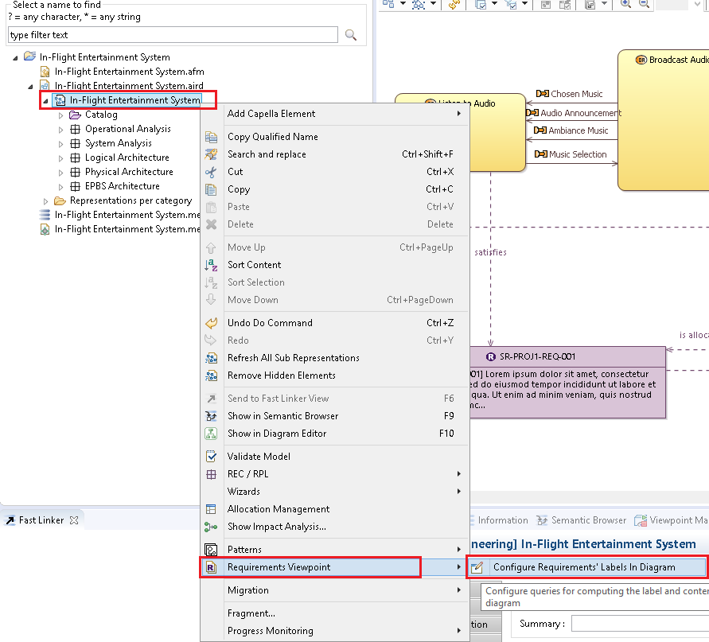
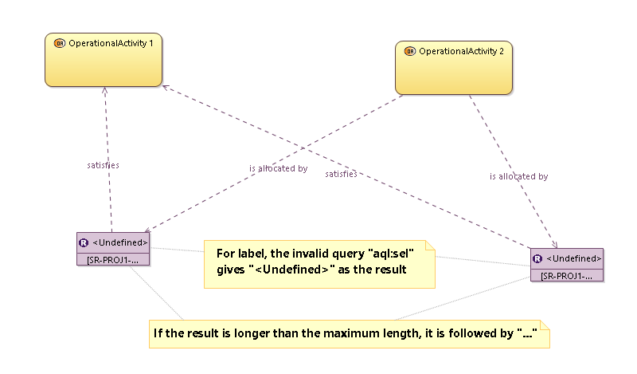
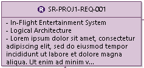

- After each modification of the AQL expressions, each diagram needs to be refreshed manually by users so that new changes will be taken into account. It is possible to refresh all diagrams at one click by following the screenshot below.
Requirements and their relations (from/to Capella elements and internal relations between Requirements) can be displayed in your diagrams. For this, the Requirements layer must be activated (activated by default for new diagrams):
Once activated, a new segment Requirements appears in the palette tools:
In this Requirements segment, 5 new tools are available to manipulate the requirements on a diagram.
Allow to add or remove a requirement to/from a diagram. This tool does not modify the semantic element.
Allow to allocate a requirement to a Capella element represented on the diagram by drawing an edge between them.
On a Capella element, show all of its linked Requirements, incoming and outgoing.
On a Requirement, show all of its internal Requirements, incoming and outgoing.
On the back of the diagram, show all linked Requirements of the diagram and also all linked Requirements of all
graphical elements of the diagram, incoming and outgoing.
Display a wizard to select incoming Requirements to show or hide, from a Capella Element or another Requirement.
Display a wizard to select outgoing Requirements to show or hide, to a Capella Element or another Requirement.
The label and content displayed for each requirement can be computed dynamically by evaluating two predefined AQL expressions. The two AQL expressions can be configured in the dedicated wizard dialog.
The wizard can be activated by clicking on the root "System Engineering" of a Capella project which has been referenced by the Requirements Viewpoint.
By default, there are two predefined AQL expressions for each label and content of requirements. The default length for displaying label and content of each requirement in diagrams are 80 characters. If the result is longer than the preferred length, it will be trimmed and followed by "...". Users have their own rights to define the AQL expressions and the lengths that fulfill their operational needs. However, if the AQL expression is invalid, in other words, could not be interpreted, the result will be displayed as <undefined>.
The AQL expression is very flexible and easy to use for almost every operational need. For instance, the example below shows how we can display the content of each requirement by aggregating information from 3 properties in 3 bulleted lines:
aql:OrderedSet{self.ReqIFLongName, self.ReqIFChapterName, self.ReqIFText}->select(s | s != 'null' and s.size() > 0).prefix('- ')->sep('\n')
|
 |
|
|
|